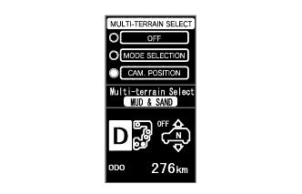

СИСТЕМА МОНИТОРА БОКОВОГО ОБЗОРА (для моделей с системой помощи при парковке) > ОПИСАНИЕ СИСТЕМЫ |
| ОБЩИЕ СВЕДЕНИЯ |
В состав этой системы входит боковая телекамера в сборе, вмонтированная в наружное зеркало заднего вида в сборе (со стороны пассажира) и предназначенная для отображения бокового вида со стороны пассажира на дисплее модуля системы навигации и индикации.
Система включает следующие устройства:
Боковая телекамера со стороны переднего пассажира в сборе
Боковая телекамера со стороны водителя в сборе*1
ЭБУ системы помощи при парковке
Дисплей модуля системы навигации и индикации
Витой кабель в сборе
Переключатель на рулевом колесе в сборе (выключатель широкоугольного монитора переднего вида и бокового обзора, многофункциональный переключатель*1)
ЭБУ системы противоскольжения
Датчик положения паркинга/нейтрали в сборе*2
Выключатель света заднего хода в сборе*3
Система снабжена функцией самодиагностики, которая работает в специальном окне, появляющемся на дисплее точно так же, как и в системе навигации.
| НАЗНАЧЕНИЕ УЗЛОВ И ДЕТАЛЕЙ |
ЭБУ системы помощи при парковке управляет системой, используя информацию от следующих устройств.
| Параметр / Устройство | Назначение |
|
|
| ЭБУ системы помощи при парковке |
|
| Дисплей модуля системы навигации и индикации | Получает видеосигналы, представляющие собой смесь сигналов изображения вида со стороны пассажира, от ЭБУ системы помощи при парковке и передает их в дисплей. |
| Передает сигнал положения рычага переключения передач в ЭБУ системы помощи при парковке по шине CAN. |
| Витой кабель в сборе | Передает сигнал датчика угла поворота рулевого колеса в ЭБУ системы помощи при парковке. |
| Переключатели на рулевом колесе в сборе |
|
| ЭБУ переключателя помощи при движении | Получает сигнал переключателя на рулевом колесе и передает его в ЭБУ системы помощи при парковке по шине CAN |
| ЭБУ системы противоскольжения | Передает сигнал скорости автомобиля в ЭБУ помощи при парковке. |
| ОПИСАНИЕ РАБОТЫ |
Переключатель на рулевом колесе передает в ЭБУ системы помощи при парковке сигнал включенного состояния выключателя широкоугольного монитора переднего вида и бокового обзора.
Получив этот сигнал, ЭБУ системы помощи при парковке переключает сигнал изображения для дисплея модуля системы навигации и индикации с системы навигации на систему монитора бокового обзора.
| УСЛОВИЯ ОТОБРАЖЕНИЯ ЭКРАНА МОНИТОРА БОКОВОГО ОБЗОРА |
Работа дисплея для экрана широкоугольного монитора переднего вида и бокового обзора
| *a | Переключатель режима индикации (на рисунке показан режим 3) |
| *b | Выключатель автоматического режима индикации (на рисунке автоматический режим индикации отключен) |
| *c | Экран широкоугольного монитора переднего вида |
| *d | Экран монитора бокового обзора |
Если выполняются условия отображения экрана, и система широкоугольного монитора переднего вида и бокового обзора функционирует нормально (коды DTC не зарегистрированы), то как в ручном, так и автоматическом режиме индикации отображается экран широкоугольного монитора переднего вида и бокового обзора.
| Режим индикации | Переключатель режима индикации | Функция |
| 3 | 3 окрашено серым цветом | Когда отображается экран широкоугольного монитора переднего вида и бокового обзора, при нажатии выключателя широкоугольного монитора переднего вида и бокового обзора изображение меняется либо на изображение широкоугольного монитора переднего вида, либо на изображение монитора бокового обзора (конкретный вариант переключения зависит от последнего режима изображения). |
| 2 | 2 окрашено серым цветом | Когда отображается экран широкоугольного монитора переднего вида и бокового обзора, при нажатии выключателя широкоугольного монитора переднего вида и бокового обзора изображение меняется на экран системы навигации, экран информации о настройках или другой аналогичный экран. |
| Кнопка автоматического режима индикации (индикатор в кнопке) | Режим индикации |
| Вкл (горит) | Автоматический режим индикации |
| Выкл (не горит) | Ручной режим индикации |
Функции отображения экрана для экрана широкоугольного монитора переднего вида и бокового обзора
| *a | Кнопка автоматического режима индикации |
Если выполняются условия отображения экрана, и система монитора бокового обзора функционирует нормально (коды DTC не зарегистрированы), то как в ручном, так и автоматическом режиме индикации отображается экран монитора бокового обзора.
| Кнопка автоматического режима индикации (индикатор в кнопке) | Режим индикации |
| Вкл (горит) | Автоматический режим индикации |
| Выкл (не горит) | Ручной режим индикации |
Условия отображения для ручного режима индикации, когда рычаг переключения передач находится в положении R
| Кнопка автоматического режима индикации | Экран многофункционального дисплея | Положение рычага переключения передач | Скорость автомобиля | Экран (меняется в результате управления выключателем широкоугольного монитора переднего вида и бокового обзора) |
| OFF (ВЫКЛ) | Экран системы помощи при парковке | R | 12 км/час (7,5 миль в час) или менее | Экран монитора заднего вида → экран широкоугольного монитора переднего вида и бокового обзора |
 | Выключатель широкоугольного монитора переднего вида и бокового обзора нажат |  | Когда скорость автомобиля выше 12 км/час (7,5 мили в час) |
Условия отображения для ручного режима индикации, когда рычаг переключения передач находится не в положении R
Если выполняются перечисленные ниже условия, и либо включено зажигание, либо работает двигатель (коды DTC не зарегистрированы), то при нажатии выключателя широкоугольного монитора переднего вида и бокового обзора система монитора бокового обзора изменяет отображаемое изображение.
| Кнопка автоматического режима индикации | Экран многофункционального дисплея | Положение рычага переключения передач | Скорость автомобиля | Экран (меняется в результате управления выключателем широкоугольного монитора переднего вида и бокового обзора) |
| OFF (ВЫКЛ) | Экран системы навигации и пр. | Не в положении R | 12 км/час (7,5 миль в час) или менее | Экран системы навигации и пр. → экран широкоугольного монитора переднего вида и бокового обзора → экран системы навигации и пр. |
| OFF (ВЫКЛ) | Экран системы навигации и пр. | Не в положении R | 12 км/час (7,5 миль в час) или менее | Экран системы навигации и пр. → экран монитора бокового обзора |
| Выключатель широкоугольного монитора переднего вида и бокового обзора нажат | | Когда скорость автомобиля выше 12 км/час (7,5 мили в час) |
Условия отображения для автоматического режима индикации
Если выполняются перечисленные ниже условия, система функционирует нормально (коды DTC не зарегистрированы), и установлен автоматический режим индикации, система монитора бокового обзора автоматически изменяет отображаемое изображение в зависимости от состояния автомобиля.
| Состояние автомобиля | Экран дисплея модуля системы навигации и индикации | Положение рычага переключения передач | Скорость автомобиля | Экран |
| Остановлен → движется | Экран системы навигации и пр. | Не в положении P или R | 12 км/час (7,5 миль в час) или менее | Экран системы навигации и пр. → экран широкоугольного монитора переднего вида и бокового обзора |
| Движется → остановлен | Экран системы навигации и пр. | Не в положении R | 10 км/час (6,2 миль в час) или менее | Экран системы навигации и пр. → экран широкоугольного монитора переднего вида и бокового обзора |
При нажатии кнопки режима парковки по направляющим линиям на экране монитора бокового обзора система монитора бокового обзора переключает режимы индикации. Нажатие кнопки диапазона индикации (для переднего вида) в любом режиме индикации приводит к выводу на экран переднего вида.

| *a | Режим отображения прогнозируемой минимальной траектории поворота и прогнозируемой траектории движения | *b | Режим отображения прогнозируемой минимальной траектории поворота |
| *c | Режим парковки без направляющих линий | *d | кнопка режима парковки по направляющим линиям |
| кнопка режима парковки по направляющим линиям нажата | - | - |
| Режим экрана монитора бокового обзора | Параллельная линия ширины автомобиля (зеленая) | Прогнозируемая минимальная траектория поворота (зеленая) | Прогнозируемая траектория движения (желтая) |
| Режим отображения прогнозируемой минимальной траектории поворота и прогнозируемой траектории движения | Отображается | Отображается | Отображается |
| Режим отображения прогнозируемой минимальной траектории поворота | Отображается | Отображается | Не отображается |
| Режим парковки без направляющих линий | Отображается | Не отображается | Не отображается |
Условия отображения для ручного режима индикации (рычаг переключения передач находится не в положении R)
В ручном режиме индикации (рычаг переключения передач находится не в положении R), когда либо включено зажигание, либо работает двигатель (коды DTC не зарегистрированы), если выполняются следующие условия, то при нажатии выключателя широкоугольного монитора переднего вида и бокового обзора режим индикации меняется следующим образом.
| Кнопка автоматического режима индикации | Экран многофункционального дисплея | Положение рычага переключения передач | Скорость автомобиля | Экран последнего режима | Экран (меняется в результате управления выключателем широкоугольного монитора переднего вида и бокового обзора) |
| OFF (ВЫКЛ) | Экран системы навигации и пр. | Не в положении R | 12 км/час (7,5 миль в час) или менее | Экран широкоугольного монитора переднего вида | Экран системы навигации и пр. → экран широкоугольного монитора переднего вида и бокового обзора → экран монитора бокового обзора → экран широкоугольного монитора переднего вида → экран широкоугольного монитора переднего вида и бокового обзора |
| *a | Экран системы навигации и пр. | *b | Экран широкоугольного монитора переднего вида и бокового обзора |
| *c | Экран монитора бокового обзора | *d | Экран широкоугольного монитора переднего вида |
 | При нажатии выключателя широкоугольного монитора переднего вида и бокового обзора (когда отображается режим 3) | | При нажатии выключателя широкоугольного монитора переднего вида и бокового обзора (когда отображается режим 2) |
| Когда скорость автомобиля выше 12 км/час (7,5 мили в час) | - | - |
| Кнопка автоматического режима индикации | Экран многофункционального дисплея | Положение рычага переключения передач | Скорость автомобиля | Экран последнего режима | Экран (меняется в результате управления выключателем широкоугольного монитора переднего вида и бокового обзора) |
| OFF (ВЫКЛ) | Экран системы навигации и пр. | Не в положении R | 12 км/час (7,5 миль в час) или менее | Экран монитора бокового обзора | Экран системы навигации и пр. → экран широкоугольного монитора переднего вида и бокового обзора → экран монитора бокового обзора → экран широкоугольного монитора переднего вида → экран широкоугольного монитора переднего вида и бокового обзора |
| *a | Экран системы навигации и пр. | *b | Экран широкоугольного монитора переднего вида и бокового обзора |
| *c | Экран монитора бокового обзора | *d | Экран широкоугольного монитора переднего вида |
| При нажатии выключателя широкоугольного монитора переднего вида и бокового обзора (когда отображается режим 3) | | При нажатии выключателя широкоугольного монитора переднего вида и бокового обзора (когда отображается режим 2) |
| Когда скорость автомобиля выше 12 км/час (7,5 мили в час) | - | - |
Условия для ручного режима индикации (когда рычаг переключения передач находится в положении R)
| *1 | Экран монитора заднего вида | *2 | Экран широкоугольного монитора переднего вида и бокового обзора |
| Выключатель широкоугольного монитора переднего вида и бокового обзора нажат | - | - |
В ручном режиме индикации (рычаг переключения передач находится в положении R), когда либо включено зажигание, либо работает двигатель (коды DTC не зарегистрированы), если выполняются следующие условия, то при нажатии выключателя широкоугольного монитора переднего вида и бокового обзора режим индикации меняется следующим образом.
| Отображаемый экран | Скорость автомобиля | Экран (меняется в результате управления выключателем широкоугольного монитора переднего вида и бокового обзора) |
| Экран монитора заднего вида | 12 км/час (7,5 миль в час) или менее | Экран монитора заднего вида → экран широкоугольного монитора переднего вида и бокового обзора → экран монитора заднего вида |
Условия отображения для автоматического режима индикации
Если выполняются перечисленные ниже условия, система функционирует нормально (коды DTC не зарегистрированы), и установлен автоматический режим индикации, система монитора бокового обзора автоматически изменяет отображаемое изображение в зависимости от состояния автомобиля.
| Состояние автомобиля | Отображаемый экран | Положение рычага переключения передач | Скорость автомобиля | Экран |
| Остановлен → движется | Экран системы навигации и пр. | Не в положении P или R | 12 км/час (7,5 миль в час) или менее | Экран системы навигации и пр. → экран широкоугольного монитора переднего вида и бокового обзора*1 |
| Движется → остановлен | Экран системы навигации и пр. | Не в положении P или R | 10 км/час (6,2 миль в час) или менее | Экран системы навигации и пр. → экран широкоугольного монитора переднего вида и бокового обзора*1 |
| УСЛОВИЯ ОТОБРАЖЕНИЯ ЭКРАНА МОНИТОРА ТИПА МЕСТНОСТИ |
Установите замок зажигания в положение ON (ВКЛ).
Включите режим выбора типа местности.
|  |
Выберите "CAM. POSITION" (положение камеры).
Когда рычаг переключения передач находится не в положении R, существуют следующие условия отображения для выбора камеры в режиме выбора типа местности.
| Замок зажигания | Переключатель выбора типа местности | Положение рычага переключения передач | Скорость автомобиля |
| ON (ВКЛ) | On (вкл) | Любое положение, кроме R | Менее 10 км/час (6,2 мили в час) |

| *a | Описание мультиинформационного дисплея | *b | Описание дисплея модуля системы навигации и индикации |
| Экран мультиинформационного дисплея меняется при нажатии многофункционального переключателя UP/DOWN | | Экран дисплея модуля системы навигации и индикации при нажатии многофункционального переключателя UP/DOWN |
Когда рычаг переключения передач находится в положении R, существуют следующие условия отображения для выбора камеры в режиме выбора типа местности.
| Замок зажигания | Переключатель выбора типа местности | Положение рычага переключения передач | Скорость автомобиля |
| ON (ВКЛ) | On (вкл) | R | Менее 10 км/час (6,2 мили в час) |
| *a | Описание мультиинформационного дисплея | *b | Описание дисплея модуля системы навигации и индикации |
| Экран мультиинформационного дисплея меняется при нажатии многофункционального переключателя UP/DOWN | | Экран дисплея модуля системы навигации и индикации при нажатии многофункционального переключателя UP/DOWN |
| ОПИСАНИЕ СИСТЕМЫ ПЕРЕДАЧИ ДАННЫХ |
Устройства системы монитора бокового обзора обмениваются друг с другом данными через сеть AVC-LAN. При возникновении короткого замыкания или обрыва в цепи AVC-LAN обмен данными нарушается, и система монитора бокового обзора прекращает функционировать.
| ОПИСАНИЕ ФУНКЦИИ ДИАГНОСТИКИ |
Эта система монитора бокового обзора имеет функцию диагностики с отображением на дисплее модуля системы навигации и индикации. Функция самодиагностики позволяет калибровать (настраивать и проверять) систему (Нажмите здесь).
При использовании портативного диагностического прибора система способна выполнять проверки в следующих режимах.
| Описание | Следующий шаг |
| DTC |
Нажмите здесь
|
| Режимы Data list / Active test |
Нажмите здесь
|